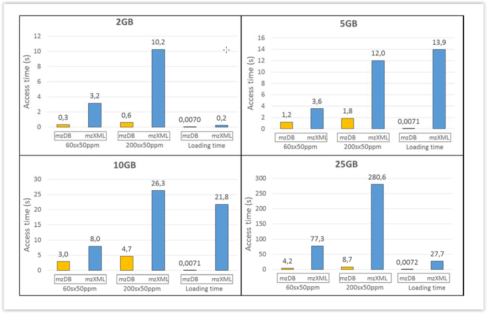

Nécessité de conversion
Les chercheurs souvent, cherche à convertir les fichiers bruts constructeurs (fermés binaires) en format de fichier ouvert, notamment dans les standards définis par PSI afin de les traiter par des solutions bioinformatiques maisons bien moins onéreuses, voire libres. Ainsi sont nés les formats basé sur du XML: mzXML, mzML (standard). L’ouverture du format de stockage, bien que nécessaire a un effet pervers puisque bien souvent, les fichiers convertis sont nettement plus gros en taille que les fichiers d’origine.
Augmentation temps de calcul et de stockage
Or, on met désormais plus de temps à traiter les données qu’à les générer. La taille des fichiers d’acquisition ne cesse d’augmenter (spectromètre de plus en plus rapide, plus de nouvelles acquisitions,SWATH, DIA).
Ces deux phénomènes entrainent la nécessité d’avoir un espace de stockage couteux et des infrastructures adaptées pour traiter les données en un temps raisonnable (d’autant que les fichiers xml ne permettent pas d’accélérer les algorithmes —du au temps d’accès aux données—).
Une nouvel espoir…(paraphrase de Star Wars)
J’ai travaillé, au CNRS, à la création d’un nouveau format de fichier pour stocker les données de masse, nommé mzDB basé sur SQLite. Il permet de réduire l’espace de stockage (fichier plus compact au moins d’un tiers par rapport au fichier xml), d’accélérer la lecture des spectres, l’extraction des XIC (eXtracted Ion Chromatogram), tout en étant regardant par rapport aux métadonnées. En un mot, beaucoup d’avantage par rapport au fichier type xml.

Il y a quelques inconvénients; l’implémentation actuelle stocke les données sous forme binaire, et est donc plateforme dépendant (e.g. les plateformes ne respectant pas la norme IEEE754 tout particulièrement).
La communauté a semble-t-il pris conscience de ce problème et souhaiterait s’orienter vers ce type de fichier, plus efficaces. Mais, le temps d’élaborer un nouveau standard va prendre un certain temps à n’en pas douter…
Implémentation
mzDB a été pensé par faciliter l’extraction de données de différentes manières, selon 3 scenarii je dirai. A chaque scenario correspond un index:
- index sur les spectres, permettant une lecture séquentielle spectre à spectre rapide (utilisation classique dans le sens de l’acquisition, cependant peu performant pour les algorithmes actuellement implémentés)
- index sur ce qu’on appelle les run-slices, entité orthogonale au spectre, possédant donc une dimension en mz fixe. Cette index permet d’écrire des algorithmes particulièrement rapide pour la quantification par exemple.
- index R* TREE, extraction d’un région particulière. mzDB est plus rapide de plusieurs ordres de magnitude par rapport à tous ses concurrents.
J’ai collaboré sur deux aspects:
- la conversion du fichier constructeur en mzDB. La bibliothèque C++ Proteowizard permet de lire les fichiers raw, wiff etc… J’ai écrit pas mal de code C, C++ low-level pour des questions de performance.
- la partie relecture du fichier mzDB en Java (le reste de notre projet est en Java/Scala)
La publication se trouve ici, et le code est sur Github.
Comments
comments powered by Disqus